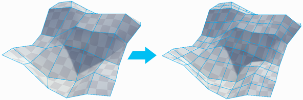
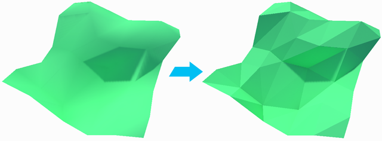

Merge Objects
Merge Objects
Merges the selected objects into a single object.
Flip Object Normals
Section Video: Object Actions: Flip Object Normals
Flips the normals of all faces on the selected object(s).
Especially useful for converting an exterior modeled shape into an interior space.

 Subdivide Object
Subdivide Object
Divides every face on selected objects, allowing for greater levels of detail when modeling.

Reset / Freeze Transform
Sets the selected objects position, rotation, and scale to world-relative {0,0,0} without changing any vertex positions.
 Move Pivot to Center of Object
Move Pivot to Center of Object
Keyboard Shortcut : CTRL J
Moves the mesh pivot to the center of the object’s bounds.

 Conform Normals
Conform Normals
Sets all face normals on the selected object to the same relative direction.
 Triangulate
Triangulate
Reduces all polygons to their base triangles, creating a "Polyworld-like" effect.

 Mirror Tool
Mirror Tool
Use the Mirror action to create mirrored copies of objects.
Mirror is especially useful when creating symmetrical items- build one half, mirror it, then weld the two together for a perfectly symmetrical result.

 Custom Settings Available :
Custom Settings Available :
| Setting | Description |
|---|---|
| X, Y, Z | Choose which axis (single or multiple) to mirror on |
| Duplicate | When On, a duplicate object will be created and mirrored, leaving the original unchanged. |
 Generate UV2
Generate UV2
Builds the UV2 channel for each selected mesh, or all meshes in the scene if the "Generate Scene UVs" option is toggled.
 Custom Settings Available :
Custom Settings Available :
| Setting | Description |
|---|---|
| Generate Scene UV2s | If On, will generate UV2s for all meshes in the scene. Otherwise, only UV2s on the selected object(s) will be generated. |
| Enable Auto UV2 | If On, UV2s will be auto-generated as needed. |
 ProBuilderize Object
ProBuilderize Object
Converts the selected object(s) into ProBuilder-editable objects.
 Custom Settings Available :
Custom Settings Available :
| Setting | Description |
|---|---|
| Preserve Faces | If On, ProBuilder will attempt to keep ngons. Otherwise, all the mesh will be converted to hard tris. |